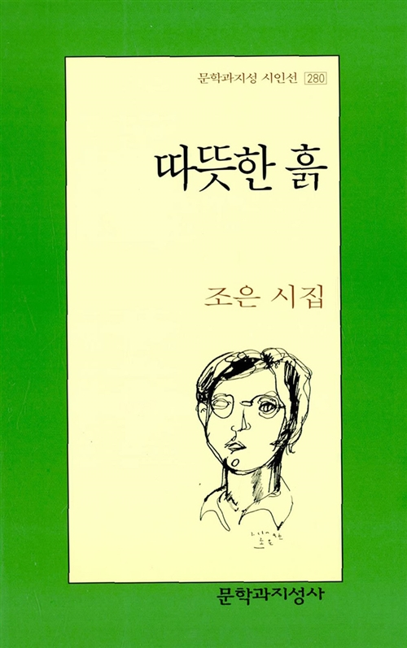

이 웹 사이트는 유태양 유태양, 만 28세. 풀스택 개발자가 목표인 주니어 프론트엔드 개발자. 의 개인 웹 사이트로
만들어졌습니다. 상단의 「portfolio」를 클릭하시면
공개된 모든 포트폴리오를 보실 수 있는 페이지로 이동합니다.
「github」를 클릭하시면 개발자의 깃헙 페이지로 이동합니다.
이 웹 사이트에 사용된 시와 이미지 등의 출처는
「credits」에 밝혔습니다.
방문해주셔서 감사합니다.
인트로의 詩는 시인 조은의 시집 『 따뜻한 흙 』  에
실려 있습니다. 타이포그래피는 Typed.js ,
메인 페이지의 배경은 Alex Gorham의 사진을 이용한 이미지입니다.
구글 웹 폰트에서 Gloria Hallelujah , Noto Serif KR
서체를 사용했습니다.
문과 체크 아이콘은 Font Awesome을 이용했습니다.